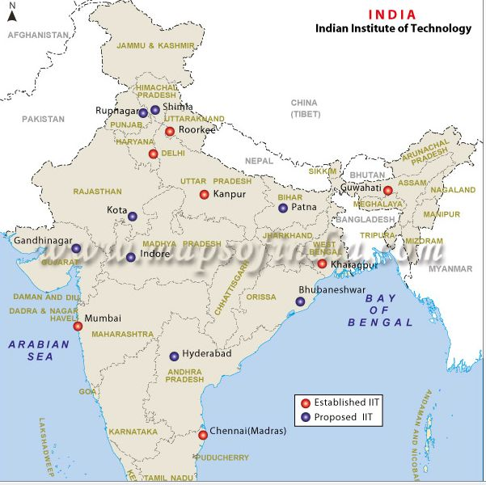

The Indian Institutes of Technology (IITs) are autonomous public institutes of higher education, located in India.They are governed by the Institutes of Technology Act, 1961 which has declared them as institutions of national importance and lays down their powers, duties, and framework for governance etc.The Institutes of Technology Act, 1961 lists twenty-three institutes (after the last amendment in 2016).Each IIT is an autonomous institution, linked to the others through a common IIT Council, which oversees their administration. The Minister of Human Resource Development is the ex-officio Chairperson of IIT Council.As of 2018, the total number of seats for undergraduate programmes in all 23 IITs is 11,279. The first IIT was set up in Kharagpur in 1951, and soon later in Bombay (1958), Madras (1959), Kanpur (1959) and Delhi (1963). An IIT was then established in Guwahati in 1994. The University of Roorkee was converted to IIT Roorkee in 2001. Eight new IITs were set up in Gandhinagar, Jodhpur, Hyderabad, Indore, Patna, Bhubaneswar, Ropar, and Mandi in 2008-09. Around the same time the Institute of Technology, Banaras Hindu University was given IIT status. Another six new IITs in Tirupati, Palakkad, Dharwad, Bhilai, Goa and Jammu, approved through a 2016 bill amendment were established in 2015-16, along with the conversion of ISM Dhanbad to IIT. The IITs have a common admission process for undergraduate admissions, the Joint Entrance Examination - Advanced, formerly called the IIT-JEE until 2012. JEE Advanced admits students according to their ranks in the exam. The post-graduate level program that awards M.Tech., MS degrees, and the doctoral programme that offers Ph.D. in engineering is administered by the older IITs. M.Tech. and MS admissions are done on the basis of Graduate Aptitude Test in Engineering (GATE). Additionally, IITs also award other graduate degrees such as M.Sc in Maths, Physics and Chemistry, MBA, etc. Admission to these programs of IITs is done through Common Admission Test (CAT), Joint Admission Test for M.Sc. (JAM) and Common Entrance Examination for Design (CEED). IIT Guwahati and IIT Bombay offer undergraduate design programmes as well.Joint Seat Allocation Authority conducts the joint admission process for a total of 23 IITs,that offer admission for 10,962 seats in 2017.
|  |